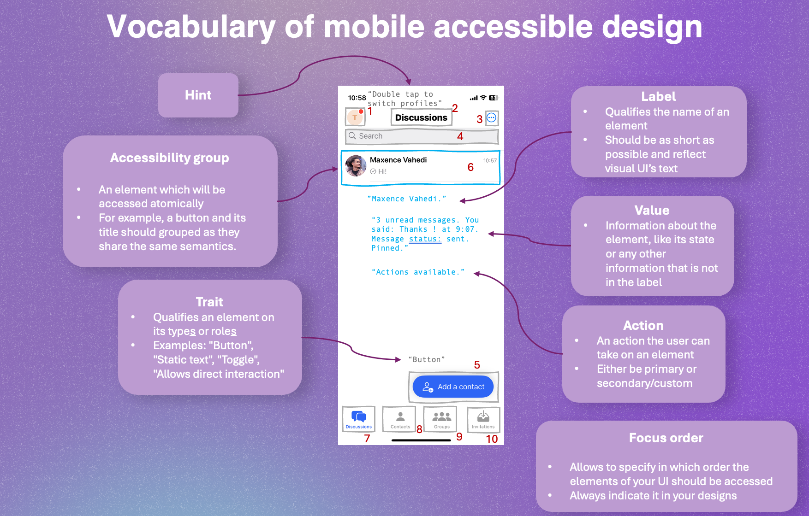

📱 Inclusive design for mobile
In this module
This module allows participants who take design decision on mobile to receive platform-specific advice.
⛳️ Section: C. Designing inclusive and accessible software
👥 Audience: Everyone
⏱️ ️Duration: 15'
📚 Prerequisites: 🎨 Inclusive design 101, 📲 Assistive technologies: Mobile
When to use ?
This short module should always be used as a complement to 🎨 Inclusive design 101, as a bonus to go further for mobile platforms. It can also be very useful to mobile developers.
Mobile devices and inclusiveness
Mobile devices are protheses
We know smartphones are very personal. They follow most people everyday and everywhere, shaping their experience of life as human beings. As your app takes the role of a prothesis (wether social, work-related, movement-related, etc.) to your users (and possibly even more so if they have disabilities), it is so important for it to be equally pleasant and ergonomic to use to everyone, and especially to those who depend on it.
Mobile devices are used in a great variety of contexts
As our smartphones typically follow us everywhere during our day, we are prone to using it in may different contexts. Environmental constraints such as light (diminishing contrast), movement (provoking motion sickness), availability of limbs (e.g. preventing users to move one of their hands), sound or exigence of silence, etc. make accessibility features crucial for even more people (with or without disabilities).
Mobile devices are some people's only access to your platform
For many people, smartphones are the only way of accessing your content. Indeed, in 2018, 20% of Internet users only had a smartphone to access the Internet (Rob Whitaker, 2020). It is thus crucial to guarantee a great and full(y accessible) experience of your content in your mobile app.
Specificities of mobile accessibility and inclusiveness
Here are some specific considerations regarding accessibility and inclusiveness on mobile devices:
Gestures
While desktop app typically rely on a keyboard and (most commonly) a mouse, mobile devices provide by default only a touch screen (and a few buttons) to interact with the device. This brings some accessibility issues to people who can't, prefer not to or have difficulties to use their limbs to interact directly with touch screens. For example, people with tremors can have a hard time targeting buttons on the screen or making complex gestures.
This is why your app should:
- Provide consistently good padding on actionable elements (touch targets' sizes should be of 44px on each direction at minimum) to ensure most people can effectively use the touchscreen.
- Propose alternative gestures (for example, allowing to close a modal by dragging it or by touching a "close" button) so that your users have different ways of executing an action.
- Integrate with (or even implement) tools allowing for shortcuts, automation and voice assistants.
- Allow users to use screen readers, switches, keyboards, etc.
For reference, this is a button with a text of size 12. While having an important padding, the button is at the edge of being too small to be considered accessible.
The accessibility model of mobile platforms
In this section, we'll go through a model allowing designers to understand how accessibility is implemented by the developers from a high-level perspective, without going in the details or into os-specific considerations. Understanding this is very important for designers, so that they have an idea of what can easily be done to make the platform accessible

-
An accessibility group (or accessible element) is an element which will be accessed atomically (i.e. without dividing it into multiple elements) by cursor interfaces (like VoiceOver/TalkBack or Switch Control/Access). For example, a button and its title should grouped as they share the same semantics.
-
A label qualifies the name of an element. It is read by screen readers and used to access the element with voice. This is why it should always as short as possible yet distinct from other elements of the interface. For complementary information on the element, the value should be used. For example, a button should have its title as label.
-
A value gives information about the element, like its state or any other information that is not in the label. It is typically read after the label by the screen reader. For example, for a toggle, the value would give its state (enabled or disabled).
-
A trait qualifies an element on its type or role. Multiple ones can (and likely should) be applied on one element. There are many depending on the OS. The most important ones are "Button", "Static text", "Toggle", "Allows direct interaction" (for elements which allow interaction through touch, bypassing the screen reader, like a digital piano), "Link", "Image", "Header" (allowing screen reader users to skim through the content), etc. They give information both to the user and to the screen reader which will interpret and behave differently. This one is quite technical, so it is okay for a designer not to know them all. But it is always good to check on the implementation if the behavior is the one intended. If not, that might be a trait issue. If you're unsure which trait should be used, don't hesitate to use a sticky note to describe the intended behavior on your design!
-
An action is - you will never guess - an action the user can take on an element. They can either be primary (i.e. actionable directly by double-tapping on a selected element) or secondary/custom (i.e. actionable once selected by swiping vertically to cycle through them), in which case they also have a textual label used to identify it.
-
A hint gives additional textual information or context to the user that will be read last. Hints should help users who have lost the context of where they are, or who don't understand how to interact with an element.
-
The focus order allows to specify in which order the elements of your UI should be accessed. In most cases, the best one won't be the left-to-right or right-to-left reading order. This is why you should always indicate in your design the order in which the elements should be accessed.
All of this represent design decisions that can be challenging to communicate to the dev team through a Figma/XD file. In the next section, we'll discuss ways you can make sure your design prescribes accessibility from the very start.
Incorporating accessibility to your design files
One of the easiest and most efficient ways of communicating these design decisions is through accessibility annotations on your design file. We won't recommend any preset specifically here, but you can find online many free accessibility annotation kits made by the Figma community. Those presets typically allow you to indicate all the information detailed in the previous section to the developers right in the design they are working from.
By incorporating these in your design, you are saving your developers a lot of design work they would have done anyway, without all your expertise and knowledge about the targeted UX for the users who use assistive technologies.